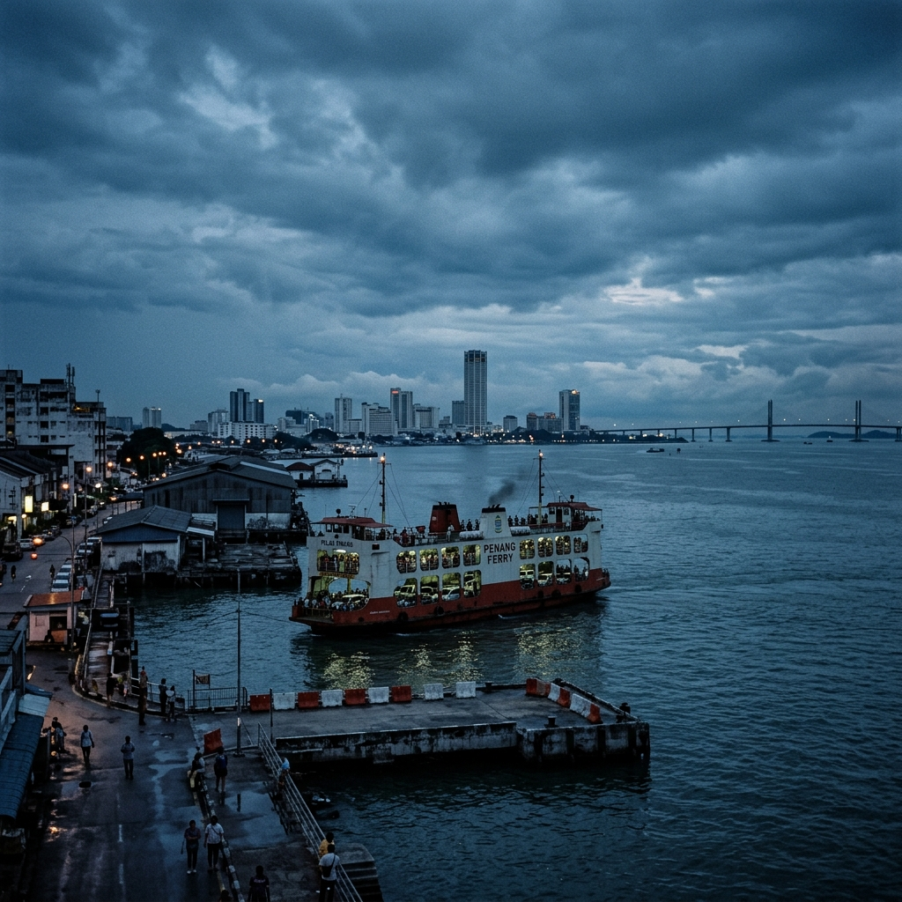

Welcome to Butterworth, PenangI grew up in Butterworth, the principal town of Seberang Perai in the state of Penang, Malaysia. Butterworth is well-known for its delicious local food, rich history, and the iconic Penang Ferry service that connects the mainland to Penang Island.  Scenic View of Butterworth Things to do in Butterworth
External LinksTo learn more about my hometown, check out these links: Quick Facts About Butterworth
Watch: Butterworth & Penang |
|||||||||||
|
© 2026 Muhamad Nasrul bin Hussain. All rights reserved. Best viewed on Google Chrome with 1920x1080 resolution. Last updated: June 2026 |
|||||||||||